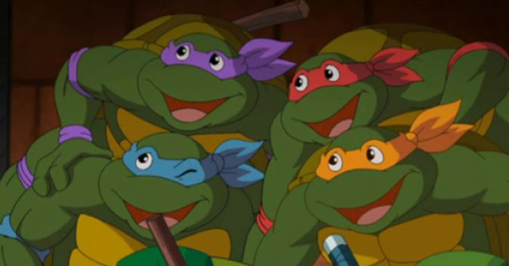
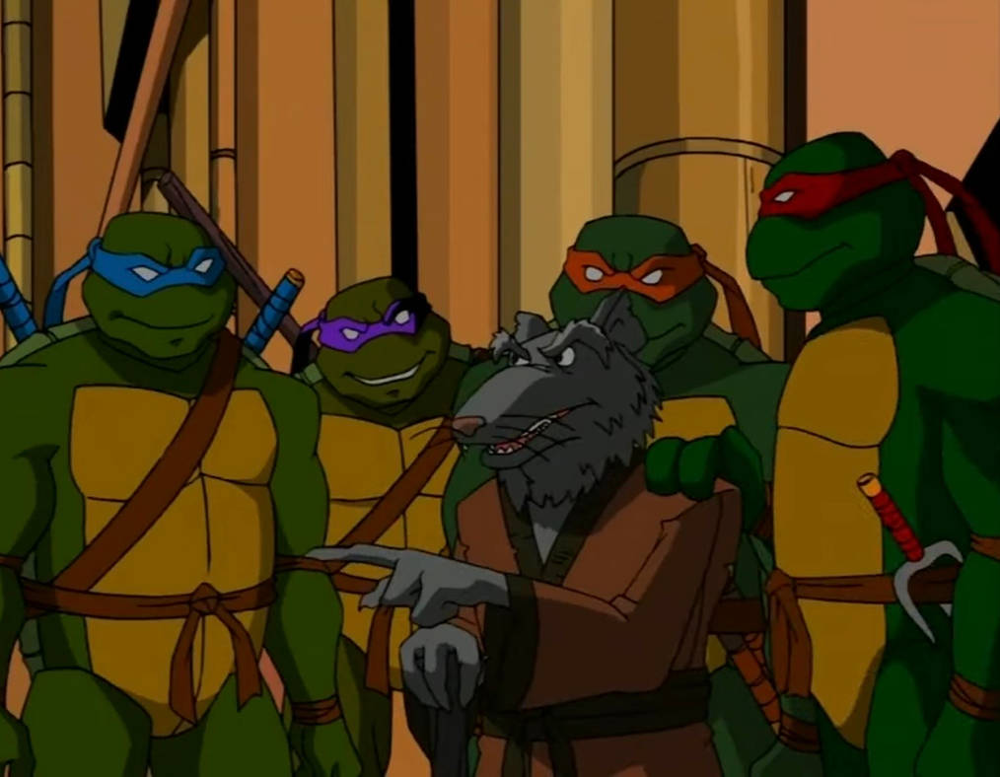
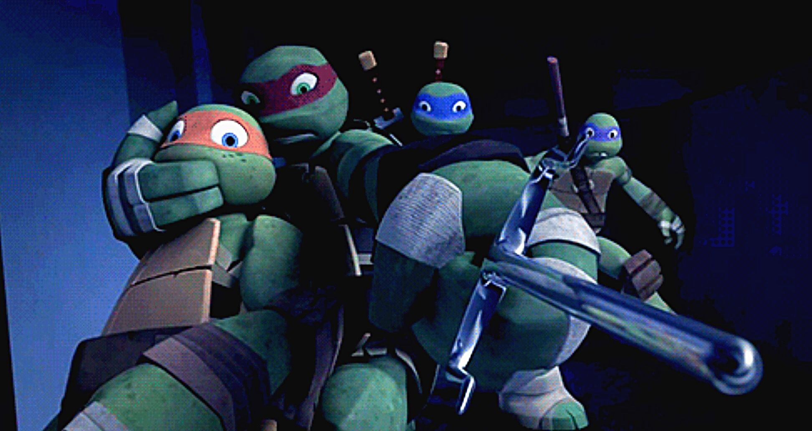
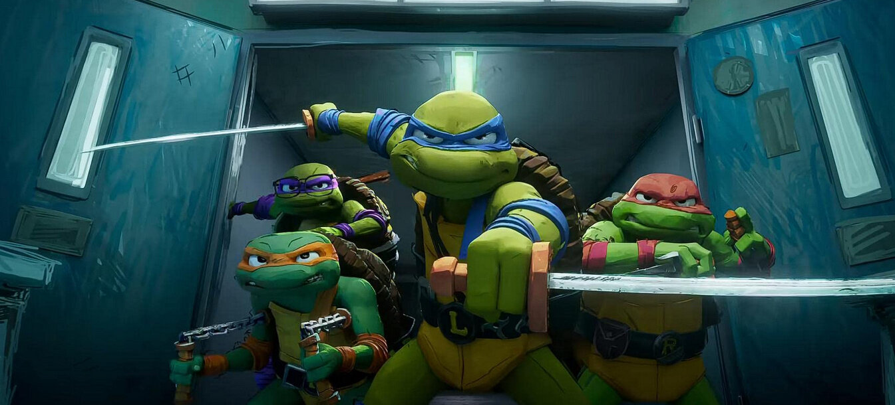

Анимационные приключения Черепашек-ниндзя
Черепашки-ниндзя (1987)
Оригинальный и самый известный мультсериал, который принес Черепашкам-ниндзя мировую популярность. Известен своим комедийным стилем, запоминающимися персонажами и фразами. Он заложил основу для многих элементов франшизы.
Черепашки-ниндзя (2003)
Более мрачная и серьезная адаптация, которая вернулась к истокам комиксов Mirage Studios. Сериал отличается более сложными сюжетными линиями, проработанными характерами и динамичными боевыми сценами.
Черепашки-ниндзя (2012)
CGI-анимационный сериал от Nickelodeon, сочетающий комедию, экшен и элементы драмы. Известен своей современной анимацией, новыми интерпретациями персонажей и расширенной мифологией. Включает много юмора и отсылок к поп-культуре.
Эволюция Черепашек-ниндзя (2018)

Стиль этого мультсериала сильно отличается от предыдущих версий. Он предлагает более легкий тон, яркую 2D-анимацию и переосмысление способностей Черепашек. Фокус смещен на комедийные ситуации и новые приключения.
Черепашки-ниндзя: Погром мутантов (2023)
Полнометражный анимационный фильм с уникальным визуальным стилем, напоминающим рисунки подростков. Фильм сосредоточен на попытках Черепашек вписаться в человеческое общество и противостоянии новым угрозам со стороны мутантов.